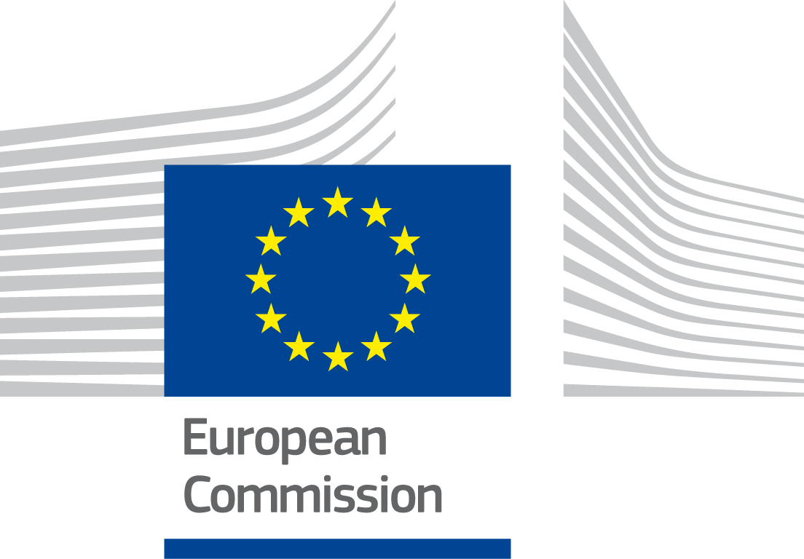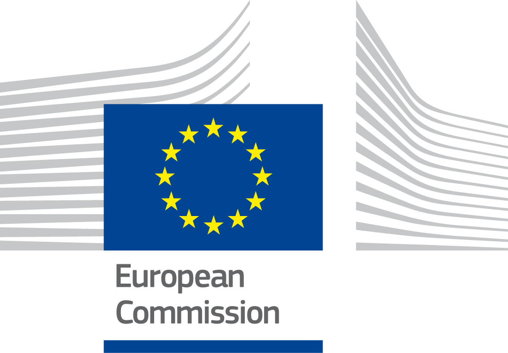
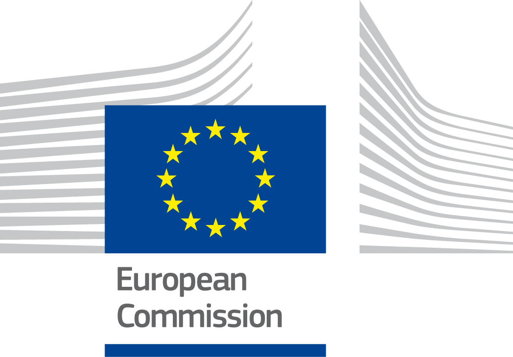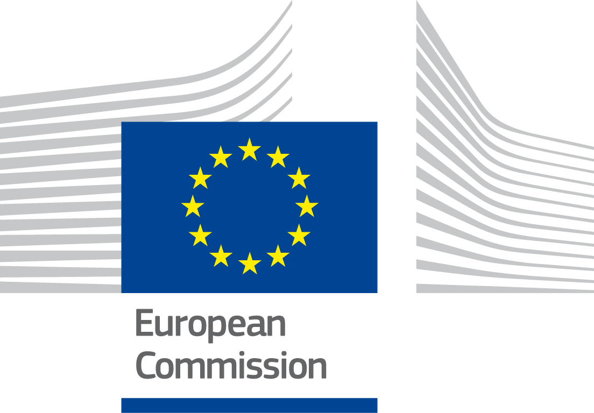ISA2
Digital Public Administration factsheet 2021
Germany
2 Digital Public Administration Highlights 8
3 Digital Public Administration Political Communications 12
4 Digital Public Administration Legislation 21
5 Digital Public Administration Governance 29
6 Digital Public Administration Infrastructure 38
7 Cross-border Digital Public Administration Services 46
Please note that the data collection exercise for the update of the 2021 edition of the Digital Public Administration factsheets took place between March and June 2021. Therefore, the information contained in this document reflects this specific timeframe.

Country
Profile
1
Population: 83 160 871 inhabitants
GDP at market prices: 3 336 180 million euros
GDP per inhabitant in PPS (Purchasing Power Standard EU 27=100):121
GDP growth rate: -4.8%
Inflation rate: 0.4%
Unemployment rate: 3.8%
General government gross debt (Percentage of GDP): 69.8
General government deficit/surplus (Percentage of GDP): -4.2
Area: 357 386 km2
Capital city: Berlin
Official EU language: German
Currency: Euro
Source: Eurostat (last update: 21 July 2021)
The following graphs present data for the latest Digital Public Administration Indicators for Germany compared to the EU average. Statistical indicators in this section reflect those of Eurostat at the time the factsheet is being prepared.
Percentage of individuals using the internet for interacting with public authorities in Germany
| Percentage of individuals using the internet for obtaining information from public authorities in Germany |
| 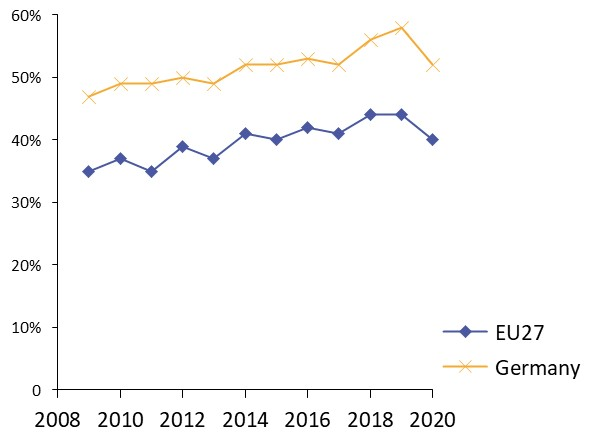 |
Source: Eurostat Information Society Indicators | Source: Eurostat Information Society Indicators |
|
|
Percentage of individuals using the internet for downloading official forms from public authorities in Germany
| Percentage of individuals using the internet for sending filled forms to public authorities in Germany |
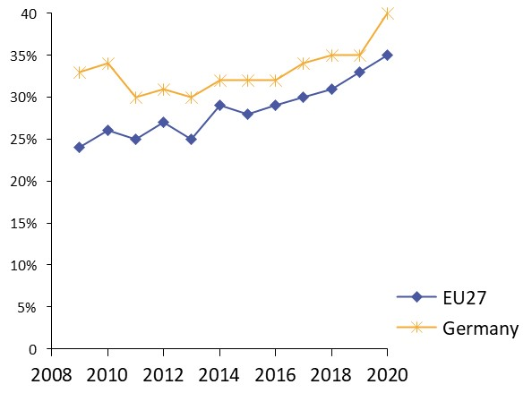 | 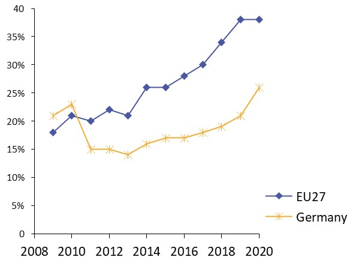 |
|
|
Source: Eurostat Information Society Indicators | Source: Eurostat Information Society Indicators |
|
In 2017, the European Commission published the European Interoperability Framework (EIF) to give specific guidance on how to set up interoperable digital public services through a set of 47 recommendations. The picture below represents the three pillars of the EIF around which the EIF Monitoring Mechanism was built to evaluate the level of implementation of the EIF within the Member States. It is based on a set of 71 Key Performance Indicators (KPIs) clustered within the three main pillars of the EIF (Principles, Layers and Conceptual model), outlined below.

Source: European Interoperability Framework Monitoring Mechanism 2020
For each of the three pillars, a different scoreboard was created to breakdown the results into their main thematic areas (i.e. the 12 principles of interoperability, the interoperability layers and the components of the conceptual model). The thematic areas are evaluated on a scale from one to four, where one means a lower level of implementation and 4 means a higher level of implementation. The graphs below show the result of the second EIF Monitoring Mechanism data collection exercise for Germany in 2020.
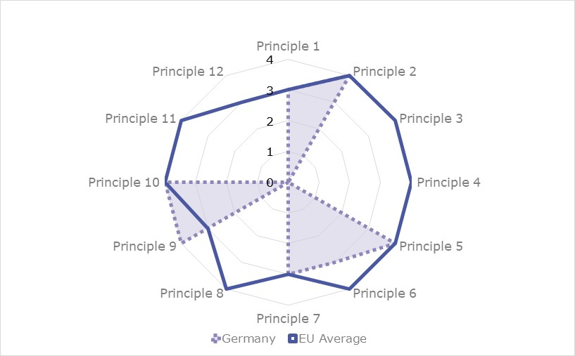
Source: European Interoperability Framework Monitoring Mechanism 2020
Germany’s results in Scoreboard 1 show an imbalanced level of implementation of the EIF Principles. Indeed, for the Principles that were analysed (Principles 1, 2, 5, 7, 9 and 10) the results show a good implementation, with scores of 3 and 4 above or at the EU average. Nonetheless, the lack of data for all the other Principles does not allow to have a good overall picture of the level of implementation of the EIF Principles in Germany.
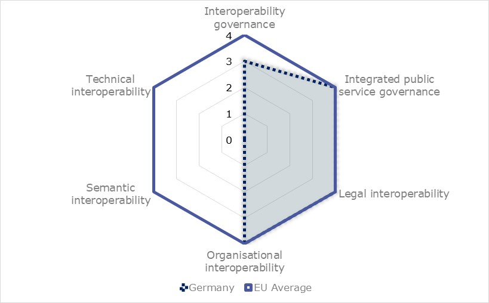
Source: European Interoperability Framework Monitoring Mechanism 2020
The German results for the implementation of interoperability layers assessed for Scoreboard 2 are also incomplete due to an absence of data in the areas of semantic interoperability and technical interoperability. However, Germany has a very good implementation of recommendation relating to integrated public service governance, legal interoperability and organisational interoperability. A potential area of improvement is the implementation of interoperability governance. More specifically, with a low score of 1 in Recommendation 23, Germany should aim at consulting relevant catalogues of standards, specifications and guidelines in accordance with its National Interoperability Framework (NIF), when procuring and developing ICT solutions.
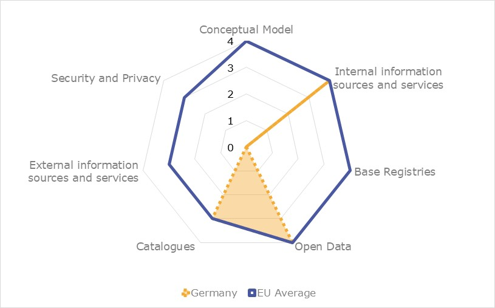
Source: European Interoperability Framework Monitoring Mechanism 2020
Germany’s scores assessing the Conceptual Model in Scoreboard 3 show as well a very incomplete picture. Where the recommendations are implemented (Internal information sources and services, Open Data and Catalogues) Germany scores well, at the EU average with scores of 3 and 4. However, the absence of data for the rest of the recommendations hinders the analysis of the overall German score on the conceptual model.
Additional information on Germany’s results on the EIF Monitoring Mechanism is available online through interactive dashboards.
The graph below presents the main highlights of the latest eGovernment Benchmark Report, an assessment of eGovernment services in 36 countries: the 27 European Union Member States, as well as Iceland, Norway, Montenegro, the Republic of Serbia, Switzerland, Turkey, the United Kingdom, Albania and Macedonia (referred to as the EU27+).
The study evaluates online public services on four dimensions:
The 2021 report presents the biennial results, achieved over the past two years of measurement of all eight life events used to measure the above-mentioned key dimensions. More specifically, these life events are divided between six ‘Citizen life events’ (Career, Studying, Family life, measured in 2020, and Starting a small claim procedure, Moving, Owning a car, all measured in 2019) and two ‘Business life events’ (Business start-up, measured in 2020, and Regular business operations, measured in 2019).
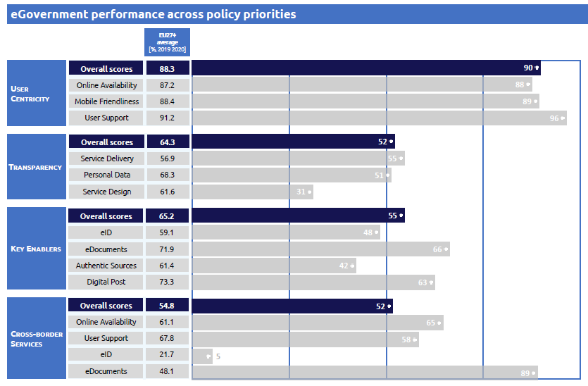
Source: eGovernment Benchmark Report 2021 Country Factsheet

Digital Public Administration Highlights
2
Digital Public Administration Political Communications
The nine-point plan for a digital Germany covers the priorities of the Federal Government Commissioner for Information Technology, Dr Markus Richter, and was published in July 2020.
The Federal Ministry of the Interior and Community (BMI) ensures that people can enjoy the benefits of the internet. It works to ensure that user-friendly public services are available online throughout Germany. At the same time, the BMI helps to balance the risks and opportunities of digital technologies by increasing IT security and strengthening the digital autonomy of the state and every individual.
To this end, the BMI provides skills training for its own staff and employees of the whole federal administration as well as support in the form of consolidated administrative services to empower not only its own employees but also those of the
whole federal administration. The BMI is the driver and guarantor of digital transformation and administrative modernisation; it stands for information and cyber security and technological sovereignty. In this context, data protection and transparency provide a basis for trust.
Digital Public Administration Legislation
The Register Modernisation Act (Registermodernisierungsgesetz) constitutes a major improvement in the provision of administrative services in line with the Online Access Act. European provisions – in particular the Single Digital Gateway Regulation – oblige the German authorities to put this so-called once only principle into practice. The act introduces a biunique, trans-sectoral identification number in the German administration in line with the Regulation (EU) 2016/679 on the protection of natural persons with regard to the processing of personal data and on the free movement of such data (General Data Protection Regulation). The legislation also provides for changes in the German fiscal code and other technical items of legislation to enable the processing of the identification number in order to provide administrative services in line with the Online Access Act. The implementation of the legislation is embedded in a roadmap for a modernised register landscape adopted by the Federal Government and the Länder (German Federal States).
Digital Public Administration Governance
The newly created Federal IT_Cooperation FITKO assists the IT Planning Council operationally by carrying out its tasks in accordance with Article 91c of the Basic Law and Section 1 (1) of the State Treaty on IT. FITKO’s tasks include developing and implementing a federal digital strategy and a federal IT architecture, promoting joint IT solutions, administering the budget for digital technology and creating a network to connect all relevant stakeholders.
Digital Public Administration Infrastructure
The eInvoicing service for the Federal Government was completed on 27 November 2019. Government bodies at the Federal Government level now receive and process electronic invoices via eInvoicing platforms (Zentrale Rechnungseingangsplattform des Bundes, ZRE and Onlinezugangsgesetzkonforme Rechnungseingangsplattform, OZG-RE). From 27 November 2020, suppliers to Federal Government authorities and agencies must submit electronic invoices. Regulations of the German federal states may show some differences.

Digital Public Administration Political Communications
3
Berlin Declaration on Digital Society and Value-Based Digital Government
The ministers responsible for digital transformation in the public administration of EU member states officially adopted the Berlin Declaration on Digital Society and Value-Based Digital Government at an online high-level conference in December 2020. The Berlin Declaration contains common guidelines on digital transformation in Europe, its impact on society and future opportunities.
In order to enable value-based digital transformation, the countries that signed the declaration have agreed to carry out concrete measures by 2024 regarding, among other things, the digital sovereignty of their administrations, the promotion of civil society participation, digital inclusion and self-determination. These measures are based on the common values and ethical principles which form the foundation of the European Union and include in particular the following:
Shaping Digitalisation: Implementation Strategy of the Federal Government
The implementation strategy ‘Shaping Digitalisation’ (Digitalisierung gestalten –Umsetzungsstrategie der Bundesregierung) was adopted in November 2018 and aims to shape the future of Germany’s digital transformation. Focus is placed on what digitalisation can bring to the individuals and on the necessity to preserve the liberal and democratic values present in the German constitution. The main goal of the strategy is to further increase the quality of life for all German citizens in order to be able to develop additional economic and ecological potential and secure social cohesion.
Third National Action Plan within the Open Government Partnership
In the framework of its participation in the Open Government Partnership (OGP), Germany develops national action plans on open government every two years, in accordance with the OGP rules and guidelines. They are the product of a co-creation process between government and civil society resulting in relevant commitments to foster transparency, participation, accountability and other elements of government openness. The German federal government will submit a third National Action Plan (NAP) in the summer of 2021 and has therefore begun, as with the previous action plans, consulting civil society and inviting it to take part in a public consultation between March and June 2021. After an initial joint idea generation phase in March, the federal government prepared a draft, where relevant comments from the consultation were taken into account. The draft was published with an opportunity to comment for a second phase of consultations during the course of May. The new NAP will contain commitments by the federal government and the länder (in the form of an autonomous chapter of the NAP).
National eGovernment Strategy
The National eGovernment Strategy (NEGS), adopted by the Information Technology (IT) Planning Council on 24 September 2010, is regularly evaluated and updated. The goal of the current strategy is to guide the country's eGovernment progress in the coming years. The strategy has been developed in cooperation with a broad spectrum of stakeholders from the fields of administration, politics, science and business.
The NEGS aims to ensure a common orientation for eGovernment activities and efforts at federal, State and local levels in order to establish an attractive eGovernment and IT approach for citizens and businesses. According to the new vision enshrined in the strategy, eGovernment should be characterised by five principles:
The NEGS also contains six key principles that new legislations and initiatives should consider:
A Nine-Point Plan for a Digital Germany
The Nine-Point Plan for a Digital Germany covers the priorities of the Federal Government Commissioner for Information Technology, Dr Markus Richter and was published in July 2020.
The Federal Ministry of the Interior and Community (BMI) ensures that people can enjoy the benefits of the internet. It works to ensure that user-friendly public services are available online throughout Germany. At the same time, the BMI helps to balance the risks and opportunities of digital technologies by increasing IT security and strengthening the digital autonomy of the State and every individual.
To this end, the BMI provides skills training for its own staff and employees of the whole federal administration as well as support in the form of consolidated administrative services to empower not only its own employees but also those of the whole federal administration. The BMI is the driver and guarantor of digital transformation and administrative modernisation; it stands for information and cyber security and technological sovereignty. In this context, data protection and transparency provide a basis for trust.
The plan covers the following points:
Memorandum for the National eGovernment Strategy
At its fifth meeting on 30 June 2011, the IT Planning Council took the first concrete steps towards the implementation of the National eGovernment Strategy, by publishing a memorandum, which outlines the agreed strategic goals. The focus was placed on building a federal infrastructure and aligning individual measurements. According to the memorandum, IT planning envisages the following priorities to be addressed:
IT Consolidation Programme of the German Federal Government
The German cabinet decided in the summer 2015 to substantially modernise the federal government in the IT department. Consolidating IT at federal level will serve several aims, namely: ensure information security in an increasingly complex IT environment; maintain sovereignty and control over federal IT also in the future; respond swiftly to technological innovations; ensure effective, efficient, stable and future-proof operations; and enable the government to remain an attractive employer for IT experts. Data of the federal administration must be comprehensively protected and secured against misuse. Until 2022, IT consolidation will follow three lines of action: consolidating operations, consolidating services, and centralising procurement.
IT Strategy of the Federal Administration
The IT Strategy of the Federal Administration (IT-Strategie der Bundesverwaltung) defines ten cross-departmental goals for strategic IT development. With six overarching fields of action, the strategy sets priorities for the further development of IT and thus forms the basis for prioritising existing and future IT measures. To this end, the federal administration's IT strategy takes into account specifications and decisions at European as well as at national level.
Data Strategy of the German Federal Government
On 27 January 2021, the German federal cabinet adopted the Data Strategy of the German Federal Government (Datenstrategie der Bundesregierung). With over 240 measures, the Data Strategy aims to make Germany a trailblazer in the innovative use of data and data sharing in Europe. The German government developed the strategy on the basis of a broad-based participatory process which included an online survey of more than 1,200 respondents. With the help of the Data Strategy measures, the German government intends to enforce European values, the common principles of data protection as well as sovereignty in an age of global data transfers and networking.
Once-Only-Principle
A publication of the IT Planning Council on the Once-Only principle (Das Once-Only Prinzip – Potenziale für Bürger, Unternehmen und Verwaltung) from 2017 analyses the current situation of eGovernment with citizens and business having to provide the same information several times to different public authorities. Besides the description of the current situation, the publication compares the situation in different countries and presents a selection of best practices. In addition, the publication points out four major opportunities of the Once-Only principle for citizens and the administration in Germany.
Citizens:
Administration:
Finally, the publication highlights that in Germany the eGovernment-Law constitutes the legal framework to fully establish the Once-Only principle.
Architectural Guideline for Federal IT
With the Architectural Guideline for Federal IT (Architekturrichtlinie für die IT des Bundes), adopted in July 2018, the federal government aimed to provide comprehensive IT architecture management in order to achieve IT consolidation in Germany. To do so, binding architecture guidelines, which were subjected to ongoing development, were defined for all areas affected by IT consolidation in the federal government.
Broadband Atlas
The Broadband Atlas (Breitbandatlas) is the key information medium for broadband coverage in Germany. The Broadband Atlas is updated regularly and is available free of charge to all interested citizens. Interactive maps show which bandwidth and technologies are available for data transmission.
Open Government Partnership
Germany is part of the OGP initiative in which the governments of 75 countries have committed to implement Open Government in their respective countries. Germany has been participating in the OGP since December 2016 and adopted its first National Action Plan (Nationaler Aktionsplan im Rahmen der Teilnahme an der Open Government Partnership) in August 2016. A second National Action Plan to push forward the development of Open Government was published in September 2019.
Geoinformation Strategy
The federal Geoinformation Strategy (Nationale Geoinformationss-Strategie) was adopted by representatives of the federal administration, country representatives and local authorities in 2015. The strategy follows the aim to secure basic services, facilitate multiple use and promote innovation for a forward-looking and sustainable geographic information policy. Geoinformation is used for spatial decision-making processes in all social groups, is economically profitable and brings added value.
Personalausweisportal: the eID Card Website
The Federal Ministry of the Interior and Community publishes on a dedicated website information regarding the operation of the German eID Card. There is information available for citizens, businesses and local administrations. In addition, the website contains news about new possible utilisations of the eID and a brochure with background information about it.
Since January 2021, the German federal identification and authentication component has met the requirements of the European Regulation on Electronic Identification and Trust Services for Electronic Transactions (eIDAS Regulation). EU citizens now have the possibility to log in with an eIDAS-notified means of identification via the federal user account in order to be able to use online administrative services of the Federal Republic of Germany.
Cybersecurity Strategy for Germany
On 9 November 2016, the Cybersecurity Strategy for Germany was adopted by the federal government. This built upon the lessons learnt and continued the initiatives outlined in the 2011 Cybersecurity Strategy. The new strategy formed a cross-departmental strategic framework for the activities of the federal government about cybersecurity.
The overall aim of the new strategy was to ensure the protection of networked information infrastructures without affecting the opportunities and benefits offered by the cyberspace.
No political communication has been adopted in this field to date.
eProcurement in Germany
In Germany, the autonomy of three different levels of government (1 federal, 16 federal States, the Länder, and about 8500 cities and smaller communities) creates a complex legal and regulatory framework in all areas, including public procurement. The laws and regulations at different levels of government have evolved independently. Due to historic reasons, the legal framework of public procurement at the federal level in Germany is embedded both in economic and budgetary law.
Thus, the complexity of the technological environment is rather high and the baseline for the introduction of modern, user-centred eProcurement systems is really demanding. Due to some more recent EU directives that did impose temporal deadlines for the implementation of eProcurement in EU Member States, the modernisation process started in 2018, when the federal electronic tendering platform was launched successfully. Yet, it will take some more time to achieve the degree of functional integration between the eProcurement systems at all three levels that is necessary to satisfy the needs of all stakeholders involved.
Already in place is the online procurement platform. The entire procedures for public procurement below EU thresholds will be digitised just like public procurement above the EU thresholds. The website can be used to conduct procurement procedures entirely online. Nothing needs to be sent by post.
eGesetzgebung: a Project aiming at a Fully Digital Legislation Process
eGesetzgebung is a project of the Federal Ministry of the Interior and Community adopted in April 2018, aimed to create a fully digital legislative process. It will be achieved by making the legislative process at the federal level completely electronic, interoperable, and free of media discontinuity. At the same time, the process should orientate itself towards current technological developments by providing, for instance, user-friendly applications. Examples of these are: Demonstrator (prototype), ePlanning and Text-matching (restricted access). The electronic Sustainability Impact Assessment (eNAP) application makes it easier to check the sustainability of draft laws and ordinances. The electronic procedure assistant (eViR) guides users step by step through the process of drafting a bill by the federal government. The application eZeitplanung (eTime Planning) makes it easier to draw up timetables for regulatory projects in accordance with the requirements.
High-Tech Strategy 2020 for Germany: Ideas, Innovation, Prosperity
The Federal Ministry of Education and Research has developed a High-Tech Strategy that aims to stimulate Germany’s scientific and economic potential in a targeted way and to find solutions to global and national challenges. Germany would like to continue its efforts to become a worldwide innovation leader through a set of formulated innovative goals and defined priorities and introduce new instruments within a wide range of different fields of innovation.
The High-Tech Strategy is the first broad national concept which presents the joint vision of the key stakeholders involved in innovation. It is based on five pillars:
mFUND: an Initiative to support the Development of Data-Based Solutions for Mobility
The mFUND (das Startkapital für Mobilität 4.0), a research initiative of the Federal Ministry of Transport and Digital Infrastructure, has been funding research and development projects relating to digital data-based applications for Mobility 4.0 since 2016. Besides the financial support, the mFUND supports networks of political actors, researchers and businesses, as well as access to the mCLOUD data portal.
Future of the Countryside: Digitalisation Opportunities for Rural Areas
The Federal Ministry of Food and Agriculture established the programme Smart Countryside Project (Land.Digital: Chancen der Digitalisierung für ländliche Räume) to support innovative technological projects in rural areas. The project follows the overall objective to use information and communication technologies to overcome challenges in rural areas.
AI Strategy (Strategie Künstliche Intelligenz der Bundesregierung)
This AI Strategy (Strategie Künstliche Intelligenz der Bundesregierung), adopted in November 2018, was put forward by the Federal Ministry for Education and Research, the Federal Ministry of Economic Affairs and Energy and the Federal Ministry of Labour and Social Affairs. With this AI strategy, the federal government established the framework for the holistic development and application of AI in Germany.

Digital Public Administration Legislation
4
Single Digital Gateway Regulation
On 11 December 2018, the Single Digital Gateway (SDG) Regulation 2018/1724 entered into force. Based on a decision of the IT Planning Council, a national stakeholder network for the SDG implementation was set up in April 2019. It consisted of SDG multipliers appointed by each of the 16 federal States, the national coordinator appointed by the federal government, contact persons of the federal ministries and representatives of the leading municipal associations. The network will meet at least twice a year. On 21 May 2019, a national kick-off meeting for SDG implementation took place at the German Federal Ministry of the Interior and Community in Berlin.
The implementation of the SDG regulation was an integral part of the implementation of the German Act for the Improvement of Online Access to Administration Services (Onlinezugangsgesetz, OZG). A major screening process of the SDG regulation took place to identify the concrete implementation requirements on all administrative levels. The aim of this screening process was to set up a detailed requirement catalogue for the project managers of the current digitalisation initiatives (portal network, digitalisation programme, service accounts, Federal Information Management - FIM, IT consolidation at federal level, modernisation of registries, among others). A 280-page checklist was published to provide detailed information about the requirements of the German Act for the Improvement of Online Access to Administration Services. In addition, the SDG implementation requirements featured a new website that gives citizens an overview of which eGovernment Services will be digitalised and which are already available online.
Act for the Improvement of Online Access to Administration Services
On 18 August 2017, the Act for the Improvement of Online Access to Administration Services (Onlinezugangsgesetz, OZG) entered into force. The federal, regional and local levels of government are now required to take comprehensive measures in order to promote electronic government services. Core requirements include:
Act on the Promotion of Electronic Government
On 17 June 2013, the Bundestag, with the approval of the Bundesrat, adopted the Act on the promotion of electronic government (eGovernment Act, EGovG). The German law for the promotion of eGovernment came into effect on 1 August 2013. Its aim was to facilitate electronic communication with the administration and to enable federal, State and local authorities to provide simpler, more user-friendly and efficient eGovernment services. The main provisions include:
The eGovernment Act triggered legislative activities in most of the German federal States. By now, seven federal States have already adopted their own eGovernment Act, while several others have initiated legislative procedures.
German Basic Law (Articles 91c and 91d)
On 1 August 2009, within the framework of the second round of reforms of Germany's federal structure, important changes in the German Basic Law (Grundgesetz) came into force with articles 91c and 91d. Article 91c ensured the simplification of IT bodies and decision-making processes, thus increasing their effectiveness and enabling their adaptation to the needs of the fast-evolving technical progress. The German federation now has the exclusive legislative competence for the development of a secure linking-up network to interconnect the IT networks of national and federal States, which can prevent any underlying media issues. Furthermore, Article 91d constituted a vital component for administrative modernisation as it provides the legal basis for facilitating the federation and the federal States to directly and effectively benchmark their administrations in order to increase their effectiveness and transparency and provide better public services.
Law on the Connection of Information Technology Networks of Federal and State Governments
The envisaged objectives of the German Basic Law are implemented through the connection of IT networks of federal and State governments (IT-NetzG), adopted on 10 August 2009, as well as through an Inter-federal State Agreement, which came into force on 1 April 2010. According to this agreement, the IT Planning Council was established and tasked with developing the technical requirements for the use of the core network infrastructure. Moreover, the IT Planning Council bears the responsibility to steer cross-disciplined eGovernment projects involving both the federation and the federal States. Finally, the Council adopts decisions on IT interoperability and security standards.
Register Modernisation Act
The Register Modernisation Act (Registermodernisierungsgesetz) constitutes a major improvement in the provision of administrative services in line with the Online Access Act. European provisions – in particular the Single Digital Gateway Regulation – oblige the German authorities to put the so-called Once-Only principle into practice. The act introduces a biunique, trans-sectoral identification number in the German administration in line with Regulation (EU) 2016/679 of the European Parliament and of the Council of 27 April 2016 on the protection of natural persons with regard to the processing of personal data and on the free movement of such data, and repealing Directive 95/46/EC (General Data Protection Regulation). The legislation also provides changes in the German fiscal code and other technical items of legislation to enable the processing of the identification number in order to provide administrative services in line with the Online Access Act. The implementation of the legislation is embedded in a roadmap for a modernised register landscape adopted by the federal government and the Länder.
Law on the Reuse of Public Sector Information
The Directive on open data and the re-use of public sector information (Directive (EU) 2019/1024) entered into force on 16 July 2019. It replaces the Public Sector Information Directive (Directive 2003/98/EC), which was amended by Directive 2013/37/EU. Member States must transpose Directive (EU) 2019/1024 by 16 July 2021. Once fully transposed at national level, it will promote all public sector content that is in principle freely available for re-use, except in very limited cases. It will stimulate the transparency, non-discrimination and non-exclusivity of data. Furthermore, real-time data available via Application Programming Interfaces (APIs), open access to publicly funded research data and high value datasets will stimulate innovation and benefit both society and the economy.
Freedom of Information Act
After being narrowly approved by the Bundestag in early June 2005, Germany’s Freedom of information (FOI) Act was voted on 8 July 2005 by the Bundesrat, published in the Federal Gazette on 13 September 2005 and came into force on 1 January 2006. The law provided the public with a general right to access federal government information. However, this general right was limited by several broadly defined exemptions, covering, for instance, security-sensitive issues, potential threats to public safety and even the “fiscal interests of the federal government”. The legislation also contained an ‘internet clause’ to compel federal administration bodies to make a few items publicly available online. Certain federal States also have their own Freedom of Information Legislation.
Open Data Act (Article 12a)
The principle of open data is becoming increasingly important worldwide and the availability of data is becoming an important economic factor.
Considering this, on 18 May 2017, the German Bundestag passed the draft Federal Open Data Act amending the eGovernment Act, presented by the Federal Minister of the Interior, which introduced a cultural change in the administrations and obliges federal authorities to publish unprocessed data in the future.
The law sets out common criteria for open data. These include free of charge provision, free access to the data, as well as machine readability. At the same time, data protection applies, ensuring that only data suitable for publication is provided.
The nation-wide metadata portal GovData was created to ensure that the open data provided by the different administrations can be easily found.
Draft Legislation Introducing a Card for EU Citizens and Members of the European Economic Area
The draft legislation introducing a card for EU citizens and members of the European Economic Area (Gesetz zur Einführung einer Karte für Unionsbürger und Angehörige des Europäischen Wirtschaftsraums mit Funktion zum elektronischen Identitätsnachweis sowie zur Änderung des Personalausweisgesetzes und weiterer Vorschriften) was prepared in 2018 and was adopted by the German parliament in June 2019. It introduced the electronic ID card for a larger circle of people. The card is not mandatory and is available upon request for citizens of the European Union and the European Economic Area. The eID card is not a classic ID since it has an electronic chip that contains the most important personal information (more specifically, name, date and place of birth, address).
Brexit Withdrawal Agreement
The persons covered by the Brexit withdrawal agreement will also be issued an electronic residence permit with integrated eID.
eIDAS Implementation Act
Since 1 July 2016, the eIDAS Regulation has been the single legal framework for electronic trust services across the EU. In Germany, the eIDAS Implementation Act entered into force on 29 July 2017. The core of the eIDAS Implementation Act was the Trust Services Act (VDG). It regulates the national requirements for the effective implementation of the eIDAS Regulation. On 28 February 2019, the Trust Services Ordinance (VDV) came into force, providing the final specifications on the requirements for trust services and trust service providers, such as accessibility and financial security.
Electronic Identification Promotion Act
The Electronic Identification Promotion Act came into force on 15 July 2017. It aimed to promote the use and dissemination of online identification through the German eID card, making it easier and more secure. The eID card has an electronic proof of identity function and was introduced in 2010. This feature enables citizens, government agencies and businesses to reliably identify themselves on the internet. However, the use of the eID function lagged behind the expectations. In order to address this situation, since 15 July 2017, each new identity card is issued with a ready-to-use electronic identification function. With the Electronic Identification Promotion Act, several other additional measures were taken in order to promote the usage of the national eID function. The responsible data protection authorities monitor compliance with data protection.
Digital Signature Act
The German Electronic Signature Act came into force on 22 May 2001, implementing EU Directive 1999/93/EC on a Community framework for electronic signatures and replacing the previous Digital Signature Act that was adopted as part of the Information and Communication Services Act of 1 August 1997. It regulated the necessary secure infrastructure for the use of electronic signatures, which received the same legal status as hand-written signatures. It was complemented by an Ordinance on Electronic Signatures of 16 November 2001 setting out standard requirements and responsibilities for certification authorities, as well as minimum requirements for technical components used to create digital signatures. The Digital Signature Act was amended by the Signature Act (1. SigÄndG) of 04/01/2005.
Federal Data Protection Act
Germany has one of the strictest data protection laws in the European Union. The world's first data protection law was passed in the federal State Hessen in 1970. In 1977, a Federal Data Protection Law followed, which was replaced in 1990, and amended in 1994 and 1997. An additional revision took place in August 2002 to align German legislation with the EU Data Protection Directive (95/46/EC).
On 6 April 2016, the EU agreed to a major reform of its data protection framework by adopting the data protection reform package. It comprised the General Data Protection Regulation (Regulation (EU) 2016/679 - GDPR), replacing Directive 95/46/EC and the Police Directive (Directive (EU) 2016/680). The GDPR entered into force on 25 May 2018 and became directly applicable. The GDPR was designed to harmonise data privacy laws across Europe and strengthen the protection of the individual’s right to personal data protection in order to guarantee the free flow of personal data between EU Member States. However, the GDPR permitted Member States to modify several provisions under certain conditions via local legislation (opening clauses). In order to keep the quality of German data protection standards, Germany used several opening clauses and adopted the Act to Adapt Data Protection Law to Regulation (EU) 2016/679 and to Implement Directive (EU) 2016/680, including a Federal Data Protection Act. The amendments came into force in May 2018.
Commercial Registry
The most important legislation for the Commercial Registry is the German Commercial Code. Part II, Article 8, states that the Commercial Registry is under the control of the courts, and the right to inspect the Registry is open to everyone. Copies of the entries can be obtained upon request and can be authenticated. Another important regulation is the Commercial Registry Regulation. According to article 3, the Commercial Registry addresses two categories: individual merchants and registered joint stock companies. Information regarding the electronic maintenance of the Commercial Registry, recorded files, registry folders and inspections can also be found in the regulation.
Population Registry
The Population Registry falls under the Federal Registration Act (BMG). The Act does not provide a definition of the Population Registry, but it regulates areas such as the required reference data to be registered, registration authorities and their duties, storage of data, accuracy and completeness of the Population Registry, information restrictions, storage and deletion of data, registration certificates, use restrictions, automatic retrieval and data transfer.
Land Registry
Both the Land Registration Code (Grundbuchordnung - GBO) and the Civil Code (BGB) contain paragraphs which are relevant to the Land Registry. The Grundbuchordnung places more emphasis on governing the procedural part, the required processes and formalities. Its articles cover information such as the entries to be made in the Registry, the rectification of the data, the exchange of copies of the Land Registries, public charges, access to basic files and more. The Civil Code covers such items as land leases, rental fees, annuities and property management.
Official Contracting Terms for Award of Service Performance Contracts
The government transposed Directive 2004/17/EC, Directive 2004/18/EC and Directive 2005/51/EC into national law when the official contracting terms for the award of service performance contracts were published on 6 June 2006. The original contracting terms were subsequently simplified through the Contract Awards for Public Supplies and Services-Part A (VOL/A) published on 29 December 2009 in the Federal Gazette (Volume 61, No. 196a), again with a corresponding correction published on 29 February 2010. The amended Procurement Ordinance (Vergabeverordnung, VgV), which came into force on 11 June 2010, regulated the submission of electronic bids in the area of public procurement.
On 1 December 2016, the Bundestag adopted the Law on the Transposition of Directive on electronic invoicing in public procurement (Directive 2014/55/EU).
eInvoicing
In Germany, the competence in the field of eInvocing is shared between the Federal Ministry of the Interior (at the federal level) and the federal States. The legislation in place makes reference to the eInvoicing Law of 4 April 2017 (E-Rechnungsgesetz), which mandates the receipt and processing of eInvoicing for all federal contracting authorities. As far as other State and local entities are concerned, they shall rely on supplementary legislation by the federal States. Following a decision by the National IT Planning Council in June 2017, XRechnung, the German Core Invoice Usage Specification (CIUS) based on the European Norm 16931, has become the leading eInvoicing standard for central, regional and local authorities in Germany. Furthermore, the eInvoicing platform was activated by the federal government for B2G public procurement at the end of 2018. Since November 2019, B2G eInvoicing is mandatory in Germany for all government bodies at national level. B2G eInvoicing became mandatory also at regional and municipal level on 18 April 2020.
Electronic Commerce Act
The Electronic Commerce Act of 14 December 2001 implemented the EU eCommerce Directive (2000/31/EC) into German law. The Act amended the Tele Services Act and the Tele Services Data Protection Act of 1997 (both of which had been adopted as part of the Information and Communication Services Act of 1 August 1997), as well as some provisions of the German Civil Code.
Act on De-Mail Services and Amendments to other Legislation
The Act on De-Mail services and Amendments to Other Legislation contains the legal requirements for registration as a De-Mail provider. The draft was adopted by the federal cabinet on 13 October 2010 and entered into force on 3 May 2011. De-Mail enables the sending of traceable and confidential documents and messages online. Contrary to conventional e-mails, De-Mails provide proof of delivery. It is not possible to read or manipulate the contents of a De-Mail on its journey across the internet. De-Mail providers are interoperable and provide the same level of security based on an accreditation process that is specified by the legislator. De-Mail providers have to fulfil high requirements concerning security, functions, interoperability and data protection. Furthermore, the De-Mail legislation foresees that providers must not only furnish the stated certificates for security, functionality and interoperability, but must also demonstrate comprehensive measures to protect personal data within the scope of the accreditation procedure.
The basic specifications for security, functionality and interoperability were drawn up by the federal government together with future De-Mail providers and laid down in technical guidelines. To ensure compliance with these guidelines, De-Mail providers are screened in an accreditation process. De-Mail focuses on data protection and requires, for instance, that De-Mail providers can enable the use of e-mail pseudonyms to prevent communications or consumer profiles traceability. Furthermore, when requested De-Mail providers must store the user’s encryption certificates in the directory to support (additional) end-to-end encryption of De-Mails.
The German Federal Office for Information Security (BSI) has published the approval criteria on its website.
No legislation has been adopted in this field to date.

Digital Public Administration Governance
5
Federal Ministry of the Interior and Community
The responsibility for Germany's eGovernment policy lies with the Federal Ministry of the Interior and Community.
| Nancy Faeser Federal Minister of the Interior and Community
Contact details: Federal Ministry of the Interior and Community Alt Moabit 140 10557 Berlin Tel.: +49 30 18 681-0 Fax: +49 30 18 681-12926 E-mail: poststelle@bmi.bund.de Source: http://www.bmi.bund.de/ |
Federal Government Commissioner for Information Technology
The Office of the Federal Government Commissioner for Information Technology was established on 1 January 2008, in line with the guidelines of the Federal IT-Steering Strategy. In accordance with the Cabinet’s decision, the Commissioner is responsible for the following activities:
Apart from establishing the Office of the Federal Government Commissioner for Information Technology, all government departments have appointed a Chief Information Officer (CIO). The CIOs of all government departments form the CIO Conference, which is the central decision-making body for IT-related laws and regulations in the federal public administration at the ministry level.
The Commissioner chairs the CIO Conference and is the federal representative in the IT Planning Council, which is responsible for steering and coordinating cross-disciplinary eGovernment projects involving both the Federation and the federal States.
| Dr. Markus Richter State Secretary in the Federal Ministry of the Interior Federal Government Commissioner for Information Technology
Contact details: Federal Ministry of the Interior and Community Alt Moabit 140 10557 Berlin Tel.: +49 30 18 681-0 E-Mail: StR@bmi.bund.de Source: https://www.cio.bund.de |
IT Council
The Federal Government Commissioner for Information Technology chairs the IT Council. The IT Council is the central strategic body for overarching digitalisation issues. Its members are civil servants responsible for administrative digitalisation and IT policies in all federal ministries.
The main task of the Council is the strategic management of IT, administrative digitalisation and the federal government's IT consolidation.
Directorate-General for Digital Society: Information Technology
The Directorate-General for Digital Society deals with the socio-political questions of the digital revolution. This includes responsibility for the Berlin Declaration on Digital Society and value-based Digital Government. The Federal Academy of Public Administration is also part of Directorate-General DG.
| Pia Karger Director General for Digital Society and Information Technology
Contact details: Federal Ministry of the Interior and Community Alt Moabit 140 10557 Berlin Tel.: +49 30 18 681-0 Fax: +49 30 18 681-58185 E-mail: IT-Beauftragter@bmi.bund.de Source: http://www.bmi.bund.de/ |
Directorate-General for Digital Administration: Management of the Online Access Act
Since June 2020, the competence for the digital transformation of Germany’s administration is pooled in a separate Directorate-General for the ‘Digital Administration and Management of the Online Access Act’ within the Federal Ministry of the Interior and Community. The Directorate-General for Digital Administration is responsible for required legal changes, digital identities, digital infrastructure and online services as well as modernization of the registries. Thus it shortens decision-making channels and facilitates coordination. It is also responsible for administrative organization and modernization.
| Ernst Bürger Director General for Digital Administration and Management of the Online Access Act
Contact details: Federal Ministry of the Interior and Community Alt Moabit 140 10557 Berlin Tel.: +49 30 18 681-0 Fax: +49 30 18 681-12983 E-mail: DV@bmi.bund.de Source: http://www.bmi.bund.de. Picture: Henning Schacht |
Federal Ministry of the Interior and Community
The Federal Ministry of the Interior and Community is the main body that coordinates the combined implementation efforts of all federal ministries and agencies, in order to provide a modern IT infrastructure at national level. It does not coordinate the IT implementation at federal State or community level.
Federal Government Commissioner for Information Technology
The Office of the Commissioner for Information Technology brings together the units responsible for the coordination of the Information Society, the main IT strategy of the German federal administration, and the unit responsible for operative trans-departmental IT-steering, including large scale programmes, such as the IT consolidation programme. The Commissioner is the key contact person in the federal government, cooperating with federal States, municipalities and all relevant national and international stakeholders on IT-related matters. The Commissioner represents the federal government in the IT Planning Council.
IT Planning Council
The IT Planning Council is an important body which brings together the Federal Government Commissioner for Information Technology (the responsible State Secretary at federal level), the State Secretaries responsible for IT (CIOs at State level), the Federal Commissioner for Data Protection and Freedom of Information and representatives of the national associations of local authorities.
The IT Planning Council is responsible for steering and coordinating cross-disciplinary eGovernment projects involving both the Federation and the federal States. According to Article 91c of the German Basic Law, the Council is tasked with coordinating the cooperation between the Federation (Bund) and the States in the field of IT; decisions on IT interoperability and security standards; the steering of eGovernment projects; and the planning and implementation of the core network infrastructure according to the Law on Linking up Federal and Land IT Networks.
Federal IT Cooperation
In carrying out its tasks in accordance with Article 91c of the Basic Law and Section 1 (1) of the State Treaty on IT, the IT Planning Council is assisted operationally by the Federal IT Cooperation (FITKO) Project Team. The Project Team is also preparing the role of FITKO as an institution under public law, which has been set up in early 2020 and is based in Frankfurt. This public institution, which is jointly sponsored by the 16 federal States and the federal government, will consolidate the existing organisational structures as well as the personnel and financial resources of the IT Planning Council. FITKO’s tasks also include developing and implementing a federal digital strategy and a federal IT architecture, promoting joint IT solutions, administering the budget for digital technology and creating a network to connect all relevant stakeholders.
OZG-Kommunal
Initialised by the representatives of German administrative districts and municipalities, OZG-Kommunal should support local authorities during the implementation of the German Act on the Improvement of Online Access to Administration Services. OZG-Kommunal is a coordinative forum, which is intended to promote the exchange of information among eGovernment experts and across different political levels.
Coordination Office for IT-Standards
The IT Standards Coordination Office (Koordinierungsstelle für IT-Standards - KoSIT) has the task of coordinating the development and operation of IT standards for data exchange in the public administration.
KoSIT supports the IT Planning Council in its task of elaborating independent and interdisciplinary IT interoperability and IT security standards, as well as managing eGovernment projects across federal and State borders.
German Federal Office of Administration
The German Federal Office of Administration (Bundesverwaltungsamt - BVA) is Germany's central public service agency. It performs more than 100 different tasks for all federal ministries. This includes the development of some of the country’s eGovernment infrastructure components, such as the government portal Bund.de, or the content management system “Government Site Builder”.
Individual Government Ministries and Agencies
Government ministries and agencies are responsible for the implementation of their departmental ICT projects. The Federal Ministry of the Interior coordinates the combined implementation efforts of all federal ministries and agencies.
Federal Office for Information Security
The Federal Office for Information Security (Bundesamt für Sicherheit in der Informationstechnik - BSI) is the central IT security service provider for the German government. One of its key tasks is to provide support to federal authorities on IT security.
| Arne Schönbohm President of the Federal Office for Information Security (BSI)
Contact details: Federal Office for Information Security P.O. Box 200363 53133 Bonn Tel.: +49 228 99 95 82-0 Fax: +49 228 99 95 82-5400 E-mail: bsi@bsi.bund.de Source: https://www.bsi.bund.de/ |
ITZBund
ITZBund (Informations Technik Zentrum Bund) is the central IT service provider of the federal administration. Its main task is to provide high-performance and high-quality IT solutions, especially for the federal administration. The establishment of the ITZBund in 2016 was a first step towards the implementation of the general concept of IT federal consolidation.
Agency for Innovation in Cybersecurity
To ensure digital sovereignty, an Agency for Innovation in CybersSecurity (Agentur für Innovation in der Cybersicherheit) will be established. The agency’s purpose is to award targeted contracts for ambitious research projects with high innovation potential in the field of cybersecurity and related key technologies to meet the needs of the State in the area of internal and external security. In particular, the agency will support innovative projects which are characterised by radical technological novelty and which can therefore have a market-changing effect.
Federal Ministry of the Interior and Community
The body responsible for interoperability activities in Germany is the Federal Ministry of the Interior and Community.
Federal Ministry of Transport and Digital Infrastructure and Federal Motor Transport Authority (KBA)
The Central Vehicle Registry collects, records and processes vehicle and owner data from local registration authorities.
German Commercial Register
The German Commercial Register (Handelsregister) portal is run by the Ministry of Justice of the federal State of North Rhine-Westphalia on behalf of the other German federal States (Länder). It provides centralised access to all federal State registers of companies, cooperatives and partnerships and to announcements for the register.
Federal Court of Accounts
The President of the Federal Court of Accounts also serves as Federal Commissioner for Efficiency in the Public Administration. S/he puts forward proposals, recommendations, reports and opinions in order to enhance the efficiency of the federal administration. The Commissioner may also advise parliament upon request.
National Regulatory Control Council
The National Regulatory Control Council (Normenkontrollrat) is an independent advisory body to the federal government. Since 2006, it has been reviewing the transparent and comprehensible presentation of the bureaucratic costs arising from information obligations and, since 2011, the total follow-up costs of the federal government’s draft laws. This gives decision-makers in government and parliament reliable information about the costs associated with their decisions. One of the main topics of the Regulatory Control Council is to advance the digitalisation and modernisation of the administration.
Federal Commissioner for Data Protection and Freedom of Information
The Federal Commissioner for Data Protection and Freedom of Information is responsible for the audits/controls of all federal agencies, with regard to the observance of data protection legislation.
| Ulrich Kelber The Federal Commissioner for Data Protection and Freedom of Information
Contact details: The Federal Commissioner for Data Protection and Freedom of Information Husarenstraße 30 53117 Bonn Tel.: +49 228 99 77 99-0 Fax: +49 228 99 77 99-550 E-mail: poststelle@bfdi.bund.de Source: https://www.bfdi.bund.de/ |
Data Ethics Commission
The use of algorithms and artificial intelligence, as well as the handling of data, holds great potential. At the same time, numerous ethical and legal questions arise when dealing with new technologies. The federal government's Data Ethics Commission (Datenethikkommission) should provide answers to these questions and, on the basis of scientific and technical expertise, develop ethical guidelines for the protection of the individual, the preservation of social coexistence and the safeguarding and promotion of prosperity in the digital age.
Under the leadership of the Federal Ministry of the Interior and Communities and the Federal Ministry of Justice and Consumer Protection, the Commission is tasked with providing the federal government with recommendations for action, as well as proposing regulatory options. A final report on the work carried out by the Commission was published in October 2019.
German Federal States
All of the federal States (Länder) are currently setting their own eGovernment strategies. As a result of these strategies, nearly all local authorities have an Internet presence and over 80% of local authorities are already providing relevant online services. Furthermore, a large number of local authorities in Germany offer central access to their online services via highly efficient portals. The federal Länder and local authorities are working in parallel to further expand their own eGovernment services.
Conference of Minister-Presidents and Conferences of Specialised Ministers
The Conference of Minister-Presidents and the Conferences of Specialised Ministers are bodies in which the federal States cooperate in their own spheres of responsibility. The federal States use these conferences to agree on proceedings in matters of joint interest, develop their position in relation to the federal government and also seek mutually agreed solutions with the federal government.
IT Planning Council
The IT Planning Council (IT-Planungsrat) is an important body which brings together the Federal Government Commissioner for Information Technology (the responsible State Secretary at federal level), the State Secretaries responsible for IT (CIOs at State level), the Federal Commissioner for Data Protection and Freedom of Information and representatives of the national associations of local authorities.
The IT Planning Council is responsible for steering and coordinating cross-disciplinary eGovernment projects involving both the Federation and the States (Länder). According to Article 91c of the German Basic Law, the Council is tasked with coordinating the cooperation between the Federation (Bund) and the States in the field of IT; decisions on IT interoperability and security standards; the steering of eGovernment projects; and the planning and implementation of the core network infrastructure according to the Law on the connection of the IT networks of the Federation and the States.
Federal IT Cooperation
In carrying out its tasks in accordance with Article 91c of the Basic Law and Section 1 (1) of the State Treaty on IT, the IT Planning Council is assisted operationally by the FITKO (Föderale IT-Kooperationen). This public institution, which is jointly sponsored by the 16 federal States and the federal government, consolidates the existing organisational structures as well as the personnel and financial resources of the IT Planning Council. FITKO’s tasks also include developing and implementing a federal digital strategy and a federal IT architecture, promoting joint IT solutions, administering the budget for digital technology and creating a network to connect all relevant stakeholders.
Individual Federal States and Municipalities
The individual federal States and municipalities are responsible for the implementation of their own eGovernment projects. They are supported by regional IT companies. These companies are often partly owned by the federal State or collectively by a union of municipalities.
Federal Ministry of the Interior
The Federal Ministry of the Interior is responsible for promoting new IT structures connecting the federal, State and local levels. The introduction of Article 91c of the German Basic Law calls for further cooperation in IT in the administration of federal and State governments.
No responsible body has been reported to date.
Ministry of Justice
Land Registries are set up for each district and are therefore managed locally.
Municipalities and Interior Ministries of the Federal States
The German Population Registry (Melderegister) is administered locally. Only some States have centralised registries. There is also a central registry for foreigners.
State Court of Accounts
Each German federal State has its own audit body, which liaises and works on equal terms with the Federal Court of Accounts, in areas where there is dual responsibility for the provision and delivery of public services. In cases where the Federal Court works with one or more of the State Courts, they perform joint audits or agree to divide audit responsibilities among their respective organisations. There are also joint working parties where the Federal Court and the various State Courts discuss matters of common interest, such as budgetary law, taxation, public works, data processing and other matters of general policy and guidance.
State Data Protection Commissioners
German States have their own Data Protection Commissioner, responsible for controlling the observance of data protection legislation by public bodies located in their jurisdictions.

Digital Public Administration Infrastructure
6
Bund.de: A new Nationwide German Digitalisation platform for the Public Administration
A modern administration needs to consistently take advantage of the opportunities offered by digitalisation and align its electronic service to citizens' and businesses’ expectations and needs. The number of public administrative procedures in Germany that can be completed online has therefore been significantly increased. These eGovernment services became easier and faster to find on the web - as users no longer need to know which federal jurisdiction is responsible for the respective procedure.
To achieve this aim, the German federal, state and local governments worked on a common digitalisation platform. This platform took the shape of a joint network of the administrative portals at the federal and state level. The portals are structured according to life and business situations. Municipal portals and services are connected to the portal network via state portals. To allow for simple and secure processing of eGovernment offers, users are provided with service accounts, similar to customer accounts in online commerce, which also feature post office box functions. In order to save time and costs, the portal network builds on existing solutions.
In 2018, the German Federal government launched a newly revised portal that provides access to eGovernment services of the federal authorities via a federal service account. This account complied with the requirements of the Regulation (EU) No. 910/2014 of the European Parliament and of the Council on electronic identification and trust services for electronic transactions in the internal market and repealing Directive 1999/93/EC - in short, eIDAS Regulation. Federal ministries and government agencies using this account automatically complied with EU requirements that came into force in September 2018. As part of the portal network, the new administrative portal will eventually also offer access to procedures and services within the jurisdiction of the federal States and municipalities. The legal basis for the entire project was the so-called Online Access Act which came into force in August 2017.
The digitalisation initiative is flanked by the digitalisation programme of the IT Planning Council, a central body in which federal and State authorities work together on issues of IT in the public sector. Within this programme, selected administrative procedures with high relevance for citizens and companies were digitalised. These procedures were made available online nationwide via the portal network.
The digitalisation of public administration in Germany was further supported by FIM (Federal Information Management). By offering textual information, form fields and processes, FIM laid the foundation for a uniform and unambiguous description and structuring of public tasks and duties both for the enforcement level and for the legislation. Furthermore, FIM provided the conditions for a simplified electronic mapping of cross-organisational administrative processes in the form of IT-based procedures. The three building blocks (services, forms and processes) as well as the overall coordination were jointly operated by the German federal government and the State governments. A Beta Version of the new portal was launched in September 2018.
GovData Portal
The German data portal GovData provides a unified, centralised access to administrative data from federal, State and local governments. The goal is to make this data accessible in one single place and thus easier to use for both citizens and businesses. In the spirit of the Open Data principle, the portal aims to promote the use of open licenses and increase the supply of machine-readable raw data.
Portalverbund
At the moment subnational and regional portals run independently. Following the concept of the federal State portals (Portalverbund), the local portals will be intelligently connected with the federal structures. The portal network Portalverbund is part of the implementation of the German Act for the Improvement of Online Access to Administrative Services.
eGovernment-Portals in Bavaria and North Rhine-Westphalia
The federal eGovernment portals in Bavaria and North Rhine-Westphalia have been examples for the further development of the Once-Only principle in Germany since 2017. Both States established portals to which citizens only need to log in once to use eGovernment services from a whole range of providers.
Berlin-Bonn Information Network
The infrastructure supporting internal communications among the federal authorities is the Berlin-Bonn Information Network (IVBB), established in the 1990s, when the German parliament and the federal government moved from Bonn to Berlin. The IVBB provides the main federal authorities with central internet access and networking services. Until July 2006, the IVBB also provided access to the IVBB intranet, which was replaced by the Federal Intranet (Intranet des Bundes). The new intranet portal features new content, services and workflows, such as a search engine, a travel management system and access to information and document databases for people and federal agencies.
The IVBV is a private IP-based communication network, which serves as intranet among the different public administration departments. Its infrastructure facilitates the incorporation of the Berlin‑Bonn Information Network (IVBB) as well as of other networks of the federal administration into a comprehensive IP-based network, featuring, amongst others, a firewall system, comprehensive encryption of the data communication and permanent observation of the connected users and the established connections.
Federal Networks
The Federal Networks (Netze des Bundes - NdB) replace the Berlin-Bonn Information Network (IVBB) and the Information Network of the Federal Administration (IVBV) and increase the efficiency and security (in terms of availability and privacy) of the networks involved. The aim is to create a common infrastructure for the federal government in the long term. NdB provides the main federal authorities with central internet access and networking services. In 2006, the Federal Intranet (Intranet des Bundes) was introduced. The intranet portal features services and workflows, such as a search engine, a travel management system and access to information and document databases for people and federal agencies. NdB is a private IP-based communication network, which serves as intranet among the different public administration departments.
The importance of network infrastructures has changed over the last 20 years. Today network infrastructures are essential for the modern administration. Nearly every public authority needs special IT procedures to perform its tasks.
Due to the increased threat level by highly developed malware (e.g. Trojan software), NdB fulfils the highest connection security requirements at federal and State level. Therefore, NdB provides firewall systems, comprehensive encryption of the data communication and permanent observation of the connected users and the established connections.
The sponsor for NdB is the Beauftragte für Informationstechnik der Bundesregierung (BfIT). The BDBOS is responsible for the operation of NdB.
Deutschland-Online Infrastructure
In June 2006, the Deutschland-Online action plan was approved by the federal government and the federal States. A core project within the Deutschland-Online action plan was the Deutschland-Online Infrastructure project, which aimed at establishing the network infrastructure for widespread and integrated electronic processing between administrative units. The DOI network was implemented as a connective network structure (coupling network) for the public administration networks in Germany, with junctions to the sTESTA network of the European Union and to the federal networks IVBB and IVBV/BVN, that are to be replaced in the project Federal Networks (Netze des Bundes, NdB).
De-Mail
De-Mail is an easy-to-use technology that takes conventional e-mail one step further as it allows citizens, businesses and administrations to exchange electronic messages in a secure manner. Compared to conventional e-mails, the delivery of De-Mails and the identity of senders and recipients can be proven. It is not possible to read or manipulate the contents of a De-Mail on its journey across the internet. One important aim is to make De-Mail confidential, reliable and binding through basic security functions that are easy to use and do not require additional installations for the end-user. The sender and recipient of a De-Mail can be clearly identified. Send and delivery certificates can be easily generated.
De-Mails are encrypted during transport and can neither be intercepted nor manipulated. Spam and phishing are effectively prevented because the De-Mail sender can be clearly identified by secure initial identification and users are able to log on with two-factor authentication using the new German eID card or a mobile phone-based method (mobile TAN).
Furthermore, De-Mail offers huge potential to optimise electronic communications in the private and public sector. Recently, business and administration processes were marked by media inconsistencies that produced considerable delays and additional costs. With the additional security functions that De-Mail provides, a large part of today’s paper-based business and administration processes can now be handled fully electronically, simply, quickly and from any location.
The legal requirements for registration as De-Mail provider are contained in the Act on De-Mail services and amendments to other legislation, which entered into force on 3 May 2011. So far, inter alia Deutsche Telekom AG, GMX.DE, WEB.DE and Mentana GmbH have become accredited De-Mail providers.
Electronic Identity Card
Germany's next generation Identity Card (eID) was launched on 1 November 2010. The new eID card in credit card format replaced the existing national identity card and offers more functions than the current conventional ID. By utilising a microchip, the card provides an online authentication function, applicable to both eGovernment and eBusiness transactions. Due to the assignment of authorisation certificates and mutual authentication, cardholders can be confident that whoever requests their data is also authorised to obtain it. The secure eID card provides further protection against identity theft and offers new, user-friendly ways to guarantee valid client data for service providers and to protect young people by age verification. Furthermore, the eID card can be used as identification and authentication means for remote signatures. To ensure that national ID cards continue to serve as secure travel documents, eID cards contain biometric identifiers stored on a chip, which satisfies the requirements for official identity checks. All eID cards include a digital biometric photo; cardholders could choose to include two fingerprints on the chip as well. Both identifiers provide an efficient way to increase security at border controls.
In February 2017, Germany was the first Member State to trigger the pre-notification procedure to make sure that EU citizens and businesses could use their trusted electronic identification means (eID), as provided under eIDAS, to digitally authenticate themselves in order to use online services across the European Union. elD cards shall guarantee a high level of security and protection of personal data. The notification procedure for the German eID was completed in 2017 at a high level of assurance.
Electronic Passport (ePass)
Germany was among the first countries to introduce the Electronic Passport (ePass), in November 2005. It was developed to comply with Council Regulation (EC) No 2252/2004 and equipped with a microchip, holding the owner’s data, such as name, surname, date of birth and nationality. Beyond traditionally relevant data, a digital facial image of the owner was also stored on the microchip. In June 2007, the revision of the Passport Act, as approved by the federal council, laid down the legal foundation for second generation electronic passports. In addition to the digital facial image, the new passports featured two fingerprints in digital format. Fingerprints were to be stored exclusively on the passport microchip, and never stored locally on issuance authorities’ systems, or in any other central database.
In March 2017, Germany issued a new generation of passports. For the new passport, traditional high-quality security features were complemented by additional, innovative features combining state-of-the-art materials with cutting-edge technology.
Signature Alliance
Administration and private partners founded the Signatures Alliance in 2003. The cooperation aims at promoting the usage of electronic signatures in Germany and delivering their benefits to both public and private service providers. All citizens should be able to use a standardised technical infrastructure, to access interoperable applications in the areas of eBusiness and eGovernment, using their diverse signature cards. More information and details may be found in the document “Requirements and convergent objectives of the Signature Alliance" (Vorgaben und Konvergenzziele für das Signaturbündnis).
eTendering Platform (XVergabe)
XVergabe is the official website of Germany’s project for the development of eTendering cross‑platform communication standards, which has been operational since July 2011. The project aim is to develop platform-independent eTendering standards for the cross-platform exchange of documents and data between bidders and eTendering platforms. To date, the xvergabe.org website contains basic project information, as well as the most important documents that are released as part of the project work.
Federal eProcurement Platform (eVergabe)
The eVergabe project was considered to be one of the most important projects of the BundOnline 2005 initiative. The service features the electronic awarding of orders based on communications between the awarding agency and potential bidders that are comprehensive, legally binding and free from media discontinuities. The offering ranges from notification via electronic tender submission to contract award using the contract award platform. The documents containing the contract terms can be downloaded and bids can be submitted with an electronic signature. The eAward project falls within the remit of the Procurement Agency of the Federal Ministry of the Interior (BMI). In technical terms, the service was implemented as a web-based transactional platform using Java clients and combined with a web interface to search for tenders. In addition to the eVergabe platform, all public tenders from this platform were automatically published online on bund.de.
Federal eGovernment Shop (Kaufhaus des Bundes)
The Federal eProcurement Platform, the Procurement Agency of the Federal Ministry of the Interior also developed the Federal eGovernment shop (Kaufhaus des Bundes, KdB). With this solution, ordering materials takes place through an electronic catalogue. Supplies of printing paper, for instance, are ordered with a few clicks. Even customised PCs and cars can be ordered online directly from the company. Conservative calculations estimate that each electronically-executed order via KdB saves at least 377 minutes (which equals EUR 195 of personnel expenses) compared to the simplest form of single tender action.
E-Rechnung
The eInvoicing service of the federal government was completed on 27 November 2019. Federal government bodies now receive and process electronic invoices via eInvoicing platforms (Zentrale Rechnungseingangsplattform des Bundes, ZRE and Onlinezugangsgesetzkonforme Rechnungseingangsplattform, OZG-RE). From 27 November 2020, suppliers of federal government authorities and agencies will have to submit electronic invoices. The regulations of the German federal States may show some differences.
ePayBL
ePayBL (ePayment des Bundes und der Länder) was established as a mandatory basic IT component at the federal government level. ePayBL is a software component developed by a joint community of federal (Bund) and State (Länder) administration. It supports several payment options.
Library Portal (Bibliotheksportal)
This library portal (Bibliotheksportal) provides quick and easy access to a wide range of information through the federal intranet. This portal lists the literary works, the electronic publications, the databases and the services made available by twenty-two libraries. Users can, anytime and from anywhere, search the library catalogues of all participating libraries and the portal for specialised databases, such as Beck-Online, Juris, Makrolog and the Munzinger Archive. In addition, the portal contains a comprehensive list of links to relevant internet resources.
XRepository
XRepository is an online library for XML-based data exchange formats, launched in January 2009. This website constitutes a central location for the publication of a broad spectrum of data related to eGovernment projects, including data models, XML schemes and relevant documentation. Once published, the data is available for re-use by other administrations and designers of business processes. The website also facilitates online research on standards and interfaces, which can be subsequently downloaded at no cost. The online library is operated by the Co-ordination Office for IT Standards (KoSIT) in Bremen.
EBR, ECRIS and EUCARIS
The data of the German Business Registry can be accessed by EU Member States through the European Business Registry (EBR). Germany is also a member of ECRIS and EUCARIS.
Services Registry - German Administration Services Directory (DVDV)
The German Administration Services Directory (DVDV) is a multilevel and cross-sectoral infrastructure component of eGovernment in Germany. More specifically, it is the professional and administrative cross-border infrastructure that ensures the safe and reliable provision of automated services and specialised procedures, as well as the secure and legally binding communication between authorities and with the public administration in Germany. The DVDV is based on a directory which lists agencies and other providers with their respective services.
The DVDV relies exclusively on open internet protocols. Worldwide, it is one of the first and largest standardised Service Oriented Architecture (SOA) implementations in the government area and was made possible through unique cooperation between various levels of government and sectors in the Federal Republic of Germany.
Registry Factory
Germany has developed a new innovative tool to ensure a more efficient registry creation and administration, known as the Registry Factory. The Registry Factory provides an approach to IT which implies availability and reusability of the developed assets for any public authority wanting to create and maintain base registries. Such assets include standardised architecture, solutions, technical infrastructure, cross-sectional components, programming libraries and middleware, all of which are available for free as open source.
The Registry Factory is a solution for the construction and operation of IT systems for conducting electronic registrations in the Federal Office of Administration. The standards and tools of the Registry Factory include blueprints, building blocks, an operating platform and methodological guidelines for software engineering and development tools. The Registry Factory is designed to support custom software development. Business Information Systems, in general, can be built using the technical foundations. The Registry Factory provides additional registry-specific blueprints and building blocks to build registries. All parts can be used either in combination or separately.
Further Developments
The German Federal Ministry of the Interior and Community has identified strategic aims and possible activities for modernising registers. Currently, preparatory work is being done with the aim to define the scope of future activities.
Federal Agency For Disruptive Innovation:
The Federal Agency for Disruptive Innovation (Agentur für Sprunginnovationen) was founded in Leipzig on 16 December 2019. The founding was overseen by a commission made up of members from science, business and politics on behalf of the Federal Ministry of Research and the Federal Ministry of Economics.
The agency is intended to be a flexible and rapid State-funding instrument. With it, the Federal Ministry of Education and Research (BMBF) and the Federal Ministry for Economic Affairs and Energy (BMWi) want to support and accelerate the breakthrough of highly innovative ideas into the market. The agency's primary goal is to discover and further develop research ideas that have the potential to become leap innovations. Among these projects to be funded in the future is the establishment of new subsidiaries, which in turn create new ventures, and thus jobs, in Germany.

Cross-border
Digital Public Administration Services
7
Further to the information on national digital public services provided in the previous chapters, this final chapter presents an overview of the basic cross-border public services provided to citizens and businesses in other European countries. Your Europe is taken as reference, as it is the EU one-stop shop which aims to simplify the life of both citizens and businesses by avoiding unnecessary inconvenience and red tape in regard to ‘life and travel’, as well as ‘doing business’ abroad. In order to do so, Your Europe offers information on basic rights under EU law, but also on how these rights are implemented in each individual country (where information has been provided by the national authorities). Free email or telephone contact with EU assistance services, to get more personalised or detailed help and advice is also available.
Please note that, in most cases, the EU rights described in Your Europe apply to all EU member countries plus Iceland, Liechtenstein and Norway, and sometimes to Switzerland. Information on Your Europe is provided by the relevant departments of the European Commission and complemented by content provided by the authorities of every country it covers. As the website consists of two sections - one for citizens and one for businesses, both managed by DG Internal Market, Industry, Entrepreneurship and SMEs (DG GROW) - below the main groups of services for each section are listed.
For citizens, the following groups of services can be found on the website:
Regarding businesses, the groups of services on the website concern:
The Digital Public Administration Factsheets
The factsheets present an overview of the state and progress of Digital Public Administration and Interoperability within European countries.
The factsheets are published on the Joinup platform, which is a joint initiative by the Directorate General for Informatics (DG DIGIT) and the Directorate General for Communications Networks, Content & Technology (DG CONNECT). This factsheet received valuable contribution from the Federal Ministry of the Interior and Community (BMI).
The Digital Public Administration factsheets are prepared for the European Commission by Wavestone.
An action supported by Interoperable Europe
The ISA² Programme has evolved into Interoperable Europe - the initiative of the European Commission for a reinforced interoperability policy.
The work of the European Commission and its partners in public administrations across Europe to enhance interoperability continues at full speed despite the end of the ISA2 programme. Indeed, enhanced interoperability will be necessary to unlock the potential of data use and reuse for improved public services, to enable cross-border collaboration, and to support the sector-specific policy goals set by the Commission for the future.
Interoperable Europe will lead the process of achieving these goals and creating a reinforced interoperability policy that will work for everyone. The initiative is supported by the Digital Europe Programme.
 Follow us
Follow us

Interoperable Europe


 @
@